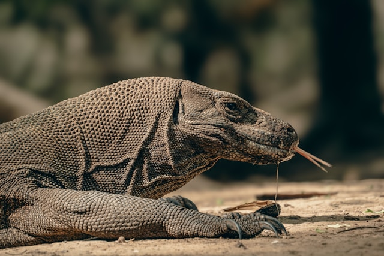

Komodo Dragon Facts
- They are found on five Indonesian islands
- They were originally from Australia
- They can take down water buffalo
- Most of the time, instead of hunting for their meals, they feed on carcasses (including human graves)
- Their teeth are like shark teeth
